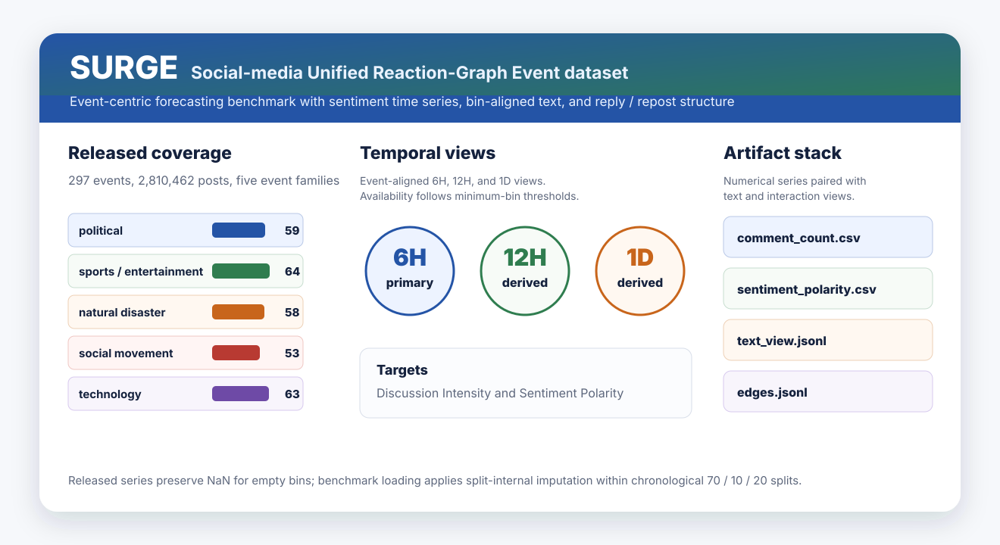

Event-Centric
The registry covers 67 real events across natural disasters, politics, social movements, technology, and sports or entertainment.
Social-media event benchmark
SURGE is an event-centric benchmark that pairs sentiment time series with bin-aligned text views and reply / repost interaction structure for public-opinion forecasting.

Public events unfold through volume, sentiment, text, and interaction structure. SURGE puts those signals into a unified event-level benchmark instead of treating each time series as an isolated numerical trace.
The registry covers 67 real events across natural disasters, politics, social movements, technology, and sports or entertainment.
Each event is released at 6-hour, 12-hour, and 1-day views when its active period satisfies the minimum-bin threshold.
Numerical targets are paired with sampled bin-aligned text views and reply / repost edges so models can use more than scalar history.
This page is a project introduction. The repository remains the source of truth for schema files, loaders, synthetic examples, and release notes.
| Full name | Social-media Unified Reaction-Graph Event dataset. |
|---|---|
| Primary tasks | Discussion Intensity forecasting and Sentiment Polarity forecasting over event-aligned temporal bins. |
| Release scale | 67 events and 817,442 posts after deduplication, quality filtering, and active-period refinement. |
| Granularities | 67 events at 6H, 64 events at 12H, and 55 events at 1D. |
| Core artifacts | Raw and normalized CSV time series, normalization statistics, event metadata, sampled text views, and reply / repost edge lists. |
| Licensing | MIT for code; CC BY 4.0 for author-created derivative data, as specified in the repository license. |
The benchmark loader uses chronological 70 / 10 / 20 splits and performs split-internal imputation, so missing-bin handling never crosses train, validation, or test boundaries.
Field-level documentation is available for numerical series, event metadata, normalization statistics, text views, and edge lists.
Two mini-events instantiate every schema at all three granularities for smoke tests and quick loader checks.
The repository includes dataloaders, metrics, a generic training loop, and a CMA reference probe.
pip install -r requirements.txt
# Inspect the released event registry
python -c "from event_config import get_real_events; print(len(get_real_events()))"
# Load one pooled forecasting setup
python -c "
from benchmark.data_loader import create_dataloaders
train, val, test, meta = create_dataloaders(
data_dir='data/events',
interval='1D',
variable='sentiment_polarity',
seq_len=14,
pred_len=7,
)
print(len(meta['event_names']), len(train.dataset), len(val.dataset), len(test.dataset))
"